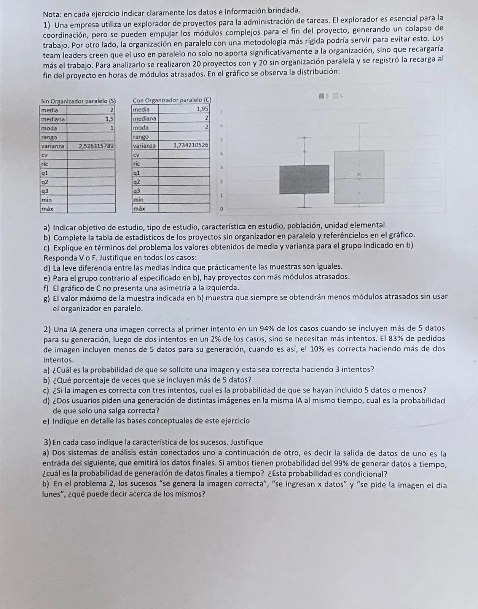

1° parcial, 03/06/2025
1° parcial, 03/06/2025
Enunciado


Propuesta de respuesta
Respuesta no verificada. La propuso Luta Studios con inteligencia artificial y ningún docente la revisó. Puede tener errores.
1a.
- Objetivo. Ver si organizar en paralelo cambia la recarga de trabajo al fin del proyecto.
- Tipo de estudio. Por muestreo, con 20 proyectos de cada grupo. Lo que se hace con las tablas y el gráfico es descriptivo. Para decir algo de todos los proyectos hace falta inferencia.
- Característica en estudio. Recarga al fin del proyecto, en horas de módulos atrasados. Es cuantitativa continua.
- Población. Todos los proyectos de la empresa que usan el explorador. Son dos, sin organizador en paralelo y con él.
- Unidad elemental. Cada proyecto.
1b. El desvío sale de la varianza y el cv, del desvío. El resto está en la caja oscura, que es la de S.
| Estadístico | S | Dónde se ve en el gráfico |
|---|---|---|
| media | 2 | |
| mediana | 1,5 | Línea dentro de la caja |
| moda | 1 | |
| rango | Largo total, de bigote a bigote | |
| varianza | 2,5263 | |
| cv | ||
| ric | Largo de la caja | |
| 1 | Borde de abajo de la caja | |
| 1,5 | Es la mediana | |
| 3 | Borde de arriba de la caja | |
| mín | 0 | Extremo del bigote de abajo |
| máx | 5 | Extremo del bigote de arriba |
1c. Sin organizador en paralelo, los proyectos terminaron en promedio con 2 horas de módulos atrasados. La varianza es 2,53 horas al cuadrado. Como está en unidades al cuadrado, se lee mejor con el desvío, horas. La recarga de un proyecto típico se aparta del promedio en una hora y media, más o menos, y eso es mucho al lado de una media de 2 ().
1d. Falso. Dos conjuntos pueden tener casi la misma media y ser muy distintos. Acá las medias son 2 y 1,95, pero las medianas son 1,5 y 2, las modas 1 y 2 y las varianzas 2,53 y 1,73. Las cajas también se reparten distinto.
1e. Verdadero. El bigote de arriba de C llega a 6 horas, y el de S, a 5. Hay proyectos con organizador en paralelo con más horas de módulos atrasados que cualquiera de los de S.
1f. Verdadero. En la caja de C el bigote de arriba, de 4 a 6, es mucho más largo que el de abajo, así que si hay una cola, está a la derecha. En la tabla, la media 1,95 casi coincide con la mediana y la moda, que valen 2, y eso es una forma casi simétrica.
1g. Falso. El máximo es un solo valor de una muestra de 20 proyectos, y otra muestra daría otro. Con una muestra no se puede afirmar «siempre». Para extender una conclusión a todos los proyectos hacen falta herramientas inferenciales, y tampoco se mira solo el máximo.
2. Llamo a «el pedido incluye más de 5 datos» y a «incluye 5 datos o menos», que forman una partición, y a «la imagen sale correcta recién con más de dos intentos».
0,94 -- correcta al 1° intento
0,17 M 0,02 -- correcta al 2° intento
0,04 -- más de dos intentos 0,17 · 0,04
0,90 -- uno o dos intentos
0,83 L
0,10 -- más de dos intentos 0,83 · 0,102a. Por el teorema de la probabilidad total,
2b. . El 17% de los pedidos incluye más de 5 datos.
2c. Por Bayes,
2d. Que una imagen salga correcta en uno o dos intentos tiene probabilidad . Supongo que lo que pasa con un pedido no cambia lo que pasa con el otro, es decir, que son independientes. «Solo una» es que salga bien la primera y no la segunda, o al revés, y esos dos casos son excluyentes.
2e. Las bases son estas.
- Los grupos de pedidos, más de 5 datos y 5 o menos, son una partición del espacio muestral.
- Los porcentajes de cada intento son probabilidades condicionales a cada grupo.
- Con eso, el teorema de la probabilidad total da en a, y el teorema de Bayes da la condicional al revés en c.
- En d se usa la independencia de los dos pedidos para multiplicar, y que los casos son excluyentes para sumar.
3a. Llamo y a «el sistema 1 genera a tiempo» y «el sistema 2 genera a tiempo». Como el segundo recibe la salida del primero, el 99% del segundo se lee como . Así se usa la regla del producto.
Lo que se pide es una intersección, no una condicional. Para calcularla se usa la condicional del segundo sistema. Si además se supone que los sistemas funcionan de manera independiente, es el caso en serie y da lo mismo, .
3b. «Se genera la imagen correcta» y «se ingresan datos» no son independientes. La probabilidad de necesitar más de dos intentos es 0,04 con más de 5 datos y 0,10 con 5 o menos, así que la cantidad de datos cambia la probabilidad de que salga bien. «Se pide la imagen el día lunes» no aparece en el problema, y lo razonable es suponerlo independiente de los otros dos. Además, «más de 5 datos» y «5 o menos» son excluyentes.
Respuesta no verificada. Puede tener errores.
Se armó con Resumen del 1° parcial, secciones Plantear el problema, Medidas de posición y forma, Dispersión, regla empírica y z, Diagrama de caja, Condicional e independencia, Árbol, total y Bayes y Confiabilidad de sistemas.
Quedó en duda: Los cuartiles, el mínimo y el máximo de S los leí del gráfico, que está sacado con la hoja inclinada. La caja de C no cierra con su tabla. Con cerca de 0, cerca de 4 y máximo 6, la varianza no podría dar 1,73. En 2 la hoja dice «más de 5» y «menos de 5» datos. Tomé que los dos grupos cubren todos los pedidos, como sugiere el ítem c con «5 datos o menos». Leí «correcta haciendo 3 intentos» como «necesita más de dos intentos», que es lo que dan los datos. En 2d tomé «salga correcta» como «sale correcta en uno o dos intentos», porque para el primer intento con 5 datos o menos no hay dato, y supuse independencia entre los dos usuarios.
¿Cómo te fue?
Marcá cada tema del examen.
- Tabla de estadísticosTablas y gráficos, en 1° parcial
- Diagrama de cajaDiagrama de caja, en 1° parcial
- Árbol de probabilidadesDe dónde sale una probabilidad, en 1° parcial